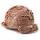
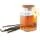
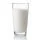
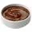

Milk-shake caseiro: 30 receitas fáceis, cremosas e muito refrescantes
Milk-shake caseiro: 30 receitas fáceis, cremosas e muito refrescantes
Ingredientes (1 porção)

3 bolas de sorvete de chocolate

1 colher (chá) de essência de baunilha

2 e 1/2 xícaras de leite gelado

2 e 1/2 xícaras de leite gelado
Modo de preparo
Modo de preparo : 5min
Bata todos os ingredientes, menos a cobertura, no liquidificador.
Espalhe um pouco de cobertura em uma taça própria para milk shake.
Espalhe um pouco de cobertura em uma taça própria para milk shake.